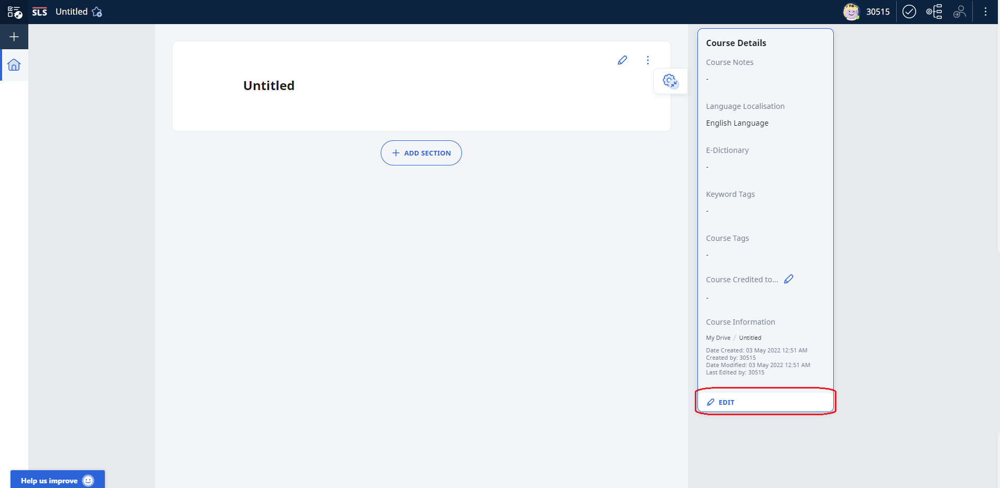
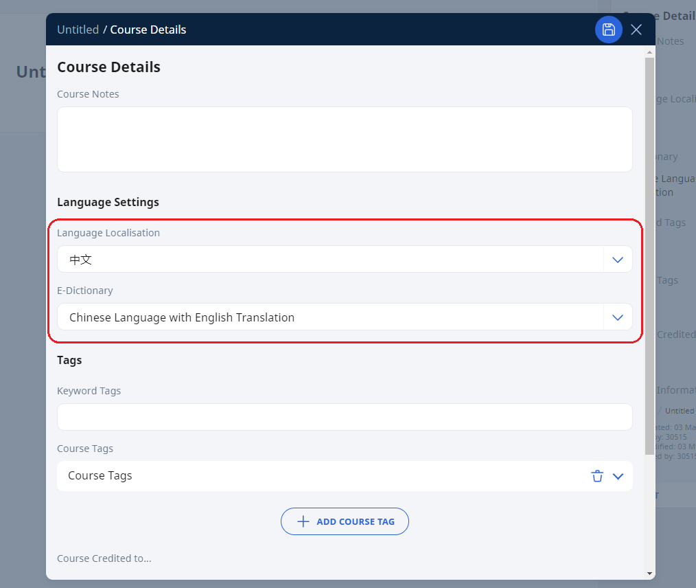

To create a more immersive MTL experience for lessons and courses, click Edit to access Lesson/Course Details.

Click the dropdown under Language Localisation and E-Dictionary, and select the relevant option.

When the E-Dictionary feature is enabled, students will have an enhanced annotation feature.
They may view the meaning of a selected word or phrase, and add their search results to
the right drawer as notes.